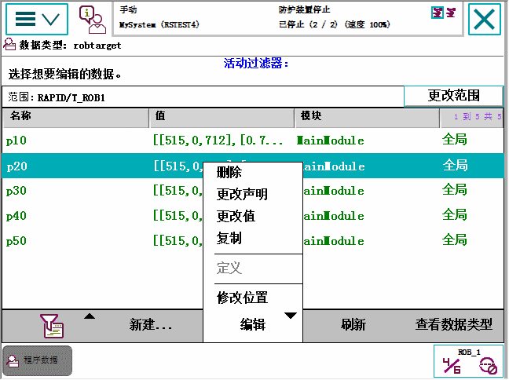

本节介绍了如何查看 Program Data（程序数据）窗口中的数据实例。同时还详细介绍了如何编辑、删除、复制和定义数据实例以及如何更改数据实例的声明。
本节详细介绍如何查看数据类型的可用实例。
操作 | |
1 | 在 ABB 菜单中，点击 Program Data（程序数据）。 |
2 | 点击您想要查看的数据类型，然后点击 Show Data（显示数据）。 |
3 | 选择您想要编辑的数据实例，然后点击 Edit（编辑）。  |
4 | 根据您想要执行的操作，点击以下一项菜单项：
根据以下各节中的说明执行操作。 |
本节介绍如何编辑数据实例值。
操作 | Information | |
1 | 点击 Change Value（更改值）打开实例。 | |
2 | 点击数值打开键盘或选择列表。 | 编辑数值的方式取决于数据类型和可能的数值，例如文本、数字、预定义值等。 |
3 | 选择或输入一个新值。 | |
4 | 单击 OK（确定）。 |
 | 注意 在正在运行的程序中，如果持续变量值在任意点发生变化，在程序停止前Program Editor（程序编辑器）仍将显示旧值。但Program Data（程序数据）视图始终显示持续变量的当前值。预了解更多信息，请参见持续声明（在技术参考手册 - RAPID Overview中）。 |
本节详细介绍如何删除数据实例。
| 注意 数据实例可以是工具、工件、有效载荷或其他。 |
操作 | |
1 | 点击菜单中的 Delete（删除）用于要删除的数据实例，详情请参阅 查看数据实例一节。 一个对话框显示。 |
2 | 如果您确定要删除数据实例，请点击 Yes（是）。 |
 | 小心 已删除的工具、工件或有效载荷不能恢复，并且所有相关数据都会丢失。如果有程序关联了这些工具、工件或有效载荷，则必须在修改程序后才能运行。 如果删除了工具，则不能从当前位置继续运行程序。 |
本节详细介绍了如何更改数据实例的声明。
操作 | |
1 | 点击菜单中的 Change Declaration（更改声明）用于要删除的数据实例，详情请参阅查看数据实例一节。  |
2 | 选择要更改的数据实例值：
|
本节详细介绍了如何复制数据实例。
操作 | |
1 | 点击菜单中的 Copy（复制）用于要复制的数据实例，详情请参阅查看数据实例一节。 数据实例副本创建。 该副本与原始数据实例有相同的值，但名称是独一无二的。 |
只有 robtarget 和 jointtarget 类型的数据实例才能使用 Modify Position（修改位置）功能。当前的活动工件和工具将用于操作中。
有关修改位置的详情，请参阅修改和调节位置。
| 注意 在 Program Data（程序数据）窗口中修改位置时，确保选取了正确的工件和工具。系统不会自动对此进行验证。 |